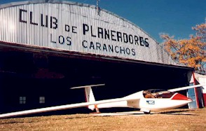

|
Club de Planeadores Los Caranchos |
|
Esta información fué obtenida del Alex's Sailplane Directory: Schleicher ASW-20  Specifications
Performance
Other
The
ASW-20 first flew in 1977 and was an instant success, winning numerous world and national
championships. Built for the 15 m. racing class, it features trailing edge flaps which
interconnect with the ailerons and allow the entire trailing edge to operate as a flap
between –9 and +5 degrees. The flaps also act as ailerons, but deflect only half of
the aileron amount. The fuselage is similar to that of the ASW-19. Schempp-Hirth type
airbrakes are provided on the upper wing surface only and operate in conjunction with the
flaps at approach setting. The –20B model was introduced in 1983 incorporating new
aerodynamic developments in the form of pneumatic (‘turbulator’) jets (about
860) placed in the lower wing surface, drawing impact air from pitot inlets and exhausting
it into the boundary layer to delay underwing flow separation. The B model has its gross
weight increased to 525 kg./ 1,157 lb. Other changes include automatic elevator hookup, an
instrument cluster attached to the forward-hinged canopy, and a hydraulic disc brake. The
–20C model has a slightly modified cockpit, an maximum gross weight of 454 kg./ 1,001
lb and water ballast of 120 kg./ 264 lb. Schleicher also introduced an ‘L’
variant, with span extended to 16.59 m. by use of detachable tip extensions, making the
ASW-20L, -20BL and 20CL. In these, water ballast is restricted to 50 kg./ 110 lb. And
gross weight is 430 kg./ 948 lb (BL) and 380 kg. / 837 lb and no ballast (CL). With the
extended tips, best glide ratio goes up to about 46. The ASW-20 was also license built by
Centrair in France in three variants. The ASW-20F and ASW-20FL are the Centrair
equivalents to the 20 B and 20BL model while the 20 FP is an F model with NASA winglets
designed to improve performance in weak conditions. Roy Mcmaster, Karl Striedeck and John
Seymour won jointly, with others, the world triangle distance record of 1,435 km./ 891.6
miles in 1994 in an ASW-20B. ASW-20’s won 2nd and 3rd places in
the 15 m. class at the 1983 World Championships at Hobbs, NM. Specifications are for the B
model. |
Información de contactoSi usted tiene deseos de volar en planeador, no dude en contactarnos
|